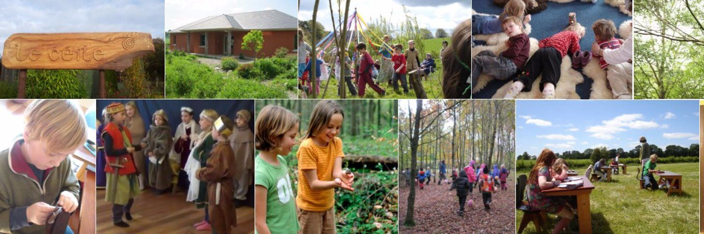
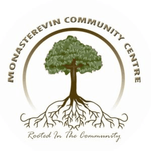

Parent-and-toddler Classes in Kildare
Explore 13 Parent-and-toddler classes for kids in Kildare, Ireland. Compare schedules, ages and pricing below, or contact a provider directly to book.
Carbury Parent, Baby and Toddler Group
Carbury parent and toddler group in Kildare is open to babies to preschoolers, welcoming new members including mums, dads, grandparents and minders to come along with their little one. The kids will enjoy the large hall to run around and play while you have a cuppa and a chat - meet new friends and have a morning out with your kid. On occasion the group invites special guests, such as Mucky Picnic. Location: Carbury GAA, Parstown, Carbury, Co. Kildare. Day/Time: every Thursday morning, 10am-12pm (during term time). Cost: free.
View full details →Castledermot Parent, Baby and Toddler Group
Castledermot Parent, Baby and Toddler Group, also known as Tir na Nog, welcomes everyone - never too young to join in. Come and enjoy meeting new people and let the little ones play, over a cup of tea and biscuits while the kiddies make new friends. No booking needed, just pop in. Location: Teach Community Centre, Castledermot Community Centre, Castledermot. Day/Time: every Monday, Wednesday and Friday, 9.30am-12pm (during school term time). Cost: €2 per family.
View full details →
Dunlavin Parent, Baby and Toddler Group
Nurture the bond with your child: the Síológa Parent & Child Programme is a unique programme offering a peaceful space for you and your little one to grow and explore together. Expect a serene environment for shared learning experiences, the chance to connect with other like-minded parents, and limited places, so secure your spot soon. For more details: info@kildaresteinerschool.ie. Location: Kildare Steiner School, Gormanstown, Dunlavin, Co. Kildare. Day/Time: every Tuesday and Thursday, 10am-12pm (during school term time). Cost: contact info@kildaresteinerschool.ie to find out costs.
View full details →Fireflies Leixlip Parent and Kids Group
Fireflies Leixlip Parent and Kids Group is a social club for children with autism and complex needs, aged 3-7 years. It's a free play group with different sensory stations for the children to explore as they wish. The hall is large and secure, offering a safe space for children and parents to meet each week. 'Let's play the sensory way!' Location: Leixlip Youth & Community Centre, Leixlip, Co. Kildare. Day/Time: every Wednesday, 5.30-7pm (during term time).
View full details →Kilcullen Parent, Baby and Toddler Group
Kilcullen Carer and Toddler Group welcomes all carers of children under 6 years; snacks, tea and coffee provided. The carer and toddler group is a support group where parents and carers can meet and develop friendships in an inclusive and friendly environment while the children play and socialise together, with toys and crafts available. Sometimes other groups join in, like Clever Little Handies, who teach baby sign language. No need to book, just pop along and join in - each carer or parent is responsible for their child at all times. A donation of €3 per family is requested to cover costs. Location: Room 3 in Kilcullen Parish, Co. Kildare. Day/Time: every Wednesday morning, 10am-12pm (during term time). Cost: €3 per family.
View full details →Kildangan Parent, Baby and Toddler Group
Kildangan Parent, Baby and Toddler Group is hosted in the newly refurbished Kildangan Hall. Come join the group for fun, play and learning, with toys and activities for the little ones while you get to meet the grown-ups. All welcome. Location: Kildangan Community Hall, Bridgeside Cottages, Kilbeg, Co. Kildare. Day/Time: every Wednesday morning, 10-11am (during term time). Cost: free.
View full details →Kill Parent, Baby and Toddler Group
Kill Parent, Baby and Toddler Group, also known as Kill Time Playgroup, is a time to meet new friends and let your little ones play while you enjoy some tea/coffee and a sneaky treat. It's a lovely space for kids to play and for parents to have a chat and get out of the house. It's pay-as-you-go, so why not drop in? The group has a WhatsApp group and runs special events at times, such as sensory classes with Little Turtles, and operates a buggy walking group during the summer too. Location: Hope Cottage (across from Spar), Main St, Kill West, Kill, Co. Kildare. Day/Time: every Monday, 10am-12pm (during term time). Cost: €3 per family.
View full details →Leixlip Library Baby and Toddler Group
Leixlip Baby & Toddler Time is a social event for little ones and their grown-ups. Come along for a story or two and a big room of toys for your little ones to play with, with tea and coffee for the grown-ups. Children up to preschool age are welcome, with storytelling and songs from 11am. No need to book, just come along. Location: Leixlip Library, Captain's Hill, Newtown, Leixlip, Co. Kildare, W23 WR96. Day/Time: every Friday, 10-11.30am. Cost: free.
View full details →

Leixlip Parent, Baby and Toddler Group
Leixlip Parent, Baby and Toddler Group welcomes parents, grandparents and minders to come along with babies/toddlers from birth to 4 years old, for a change of scenery and a chance for the little ones to play while the grown-ups chat. New members always welcome. Location: Our Lady's Parish Centre, Old Hill, Leixlip, Co. Kildare. Day/Time: every Thursday at 10am (during school term time). Cost: free.
View full details →Leixlip Parent, Baby and Toddler Group
Leixlip Parent, Baby and Toddler Group is an independent parent & toddler group affiliated with the Kildare County Childcare Commission. All staff involved in the group are Garda vetted. The group is well equipped with age-appropriate, educational and sensory toys (mostly new), which are rotated between sessions after being fully cleaned. Bathrooms with baby changing areas are located outside the hall. Location: Leixlip Youth and Community Centre, Newtown House, Captain's Hill, Newtown, Leixlip, Co. Kildare, W23 T8W5. Day/Time: 10am on Mondays and 11am on Tuesdays (during term time). Cost: €2 per family.
View full details →
Monasterevin Parent, Baby and Toddler Group
Monasterevin Parent, Baby and Toddler Group is a social group for parents and carers to bring babies and toddlers. They hold fun activities every week, from singing to dancing and messy play - a great class to join. They also host festive fun days for events such as Halloween and Christmas. Drop in and meet new friends, no booking needed. Location: Monasterevin Community Centre, Whelan's Row, Monasterevin, Co. Kildare, W34 FH24. Day/Time: every Wednesday, 10am-12pm (during school term time). Cost: free per family.
View full details →
Rathangan Parent, Baby and Toddler Group
Connect with other parents and bring your little one for nursery rhymes, sensory play, books, baby massage, and a new soft play area. For babies to toddlers (0-3 years old). Location: Rathangan Hall, Newtown Street, Rathangan, Co. Kildare. Day/Time: every Wednesday, 10-11.30am (during school term time). Cost: free.
View full details →Zumbini
Zumbini Class, a toddlers/parents group for kids (ages 0-5 years) and their caregivers. The Zumbini programme combines music, dance and educational tools for 45 minutes of nonstop bonding and fun - a great opportunity to spend time together with your child, combining development, activity, lots of fun and learning. Activities include dancing, singing, and playing instruments (drums/sticks etc). At the first class, your child receives a gift from Zumbini; at the last class, your child receives a certificate. Saturdays: Portarlington, 12.15pm; Monasterevin, 10.30am; Athy, 11.30am; Carlow, 12.30pm. Contact for a new session.
View full details →No classes match your filters.